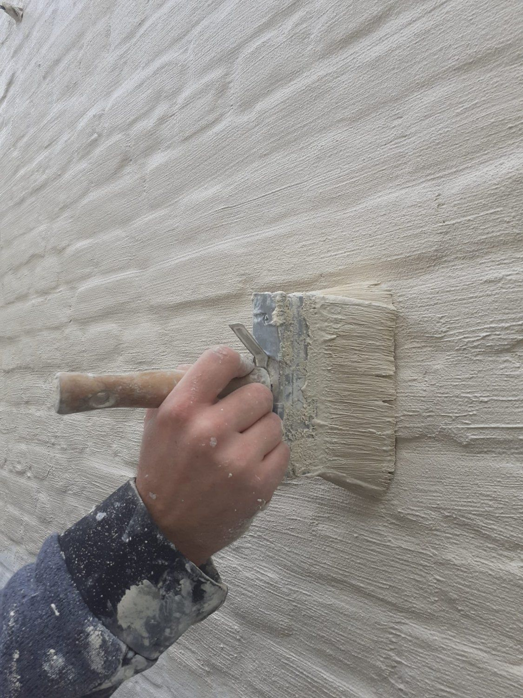

Kaleien
Een egale gevel
met tijdloos karakter.
Kalei geeft je gevel een zachte, minerale uitstraling. DECOR-X brengt de kaleilaag met de borstel aan, voor een egaal resultaat dat ademt en jarenlang mooi blijft.
Wat we kaleien
Van gevel tot tuinmuur.
Kalei hecht op baksteen, beton en andere minerale ondergronden. We bekijken altijd eerst of jouw muur geschikt is.
- 01
Gevels
Eén rustig geheel, ook bij oud metselwerk.
- 02
Tuinmuren
Een strakke achtergrond voor je tuin.
- 03
Schouwen
Een warme, matte look binnen.
- 04
Bijgebouwen
Garage of tuinhuis in dezelfde stijl.
Onze werkwijze
Goed kaleien begint bij een propere muur.
Kalei is pas zo mooi als de ondergrond eronder. Daarom nemen we de tijd om alles grondig voor te bereiden.
- 01
Reinigen
We verwijderen stof, mos en losse delen, zodat de kalei goed hecht.
- 02
Voorbereiden
Voegen en barsten herstellen we, ramen en deuren plakken we zorgvuldig af.
- 03
Kaleien
We brengen de kalei laag per laag aan met de borstel, voor een egale structuur.
- 04
Afwerken
Wil je kleur? Dan werken we af met een dampopen minerale verf naar keuze.

Waarom kaleien?
Tijdloos, ademend en mooi egaal.
Kalei is mineraal en dampopen: vocht in de muur kan eruit, waardoor je gevel gezond blijft. Bovendien verdoezelt kalei kleurverschillen en oude herstellingen in het metselwerk, zodat je gevel weer één geheel wordt.
Twijfel je tussen wit, gebroken wit of een warme tint? We geven je gratis kleuradvies, en met onze AI-visualizer zie je het resultaat al op een foto van je eigen woning.
Wat kost het?
Een eerlijke prijs, zonder verrassingen.
Elke gevel is anders. Daarom komen we gratis langs om je muren te bekijken. Daarna krijg je een duidelijke offerte met een vaste prijs, waarin elke stap staat.
- De oppervlakte van de gevel
- De staat van het metselwerk
- De bereikbaarheid en de stelling
- Het aantal lagen kalei
- Het afplakwerk rond ramen en deuren
- Een afwerking in kleur of niet
Veelgestelde vragen
Alles wat je wil weten over kaleien.
Is kaleien geschikt voor mijn gevel?
Kalei hecht goed op baksteen, beton en andere minerale ondergronden. Op een geschilderde of gecoate muur gaat dat niet zomaar. Tijdens het gratis plaatsbezoek bekijken we wat kan.
Wat is het verschil tussen kaleien en schilderen?
Kalei is een minerale laag die in de muur trekt en dampopen blijft. Je krijgt een zachte, matte structuur waarin het metselwerk nog licht zichtbaar is. Verf vormt een gesloten laag met een strakkere look.
Kan ik een kleur kiezen?
Ja. Kalei is van zichzelf wit of gebroken wit, maar we kunnen ze afwerken met een dampopen minerale verf in de kleur die jij kiest.
Wanneer kaleien we best?
Op droge dagen, niet in volle zon en niet bij vorst. Daarom plannen we kaleiwerk meestal van het voorjaar tot het najaar.
In welke regio werken jullie?
We werken in de provincies Antwerpen, Limburg en Vlaams-Brabant.
Klaar voor een gevel die weer één geheel is?
Stuur ons een foto van je gevel of plan een gratis plaatsbezoek. We geven eerlijk advies en bezorgen je een duidelijke offerte.